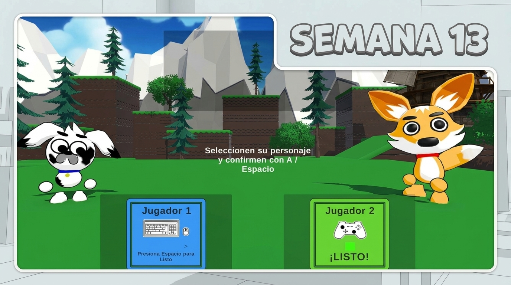
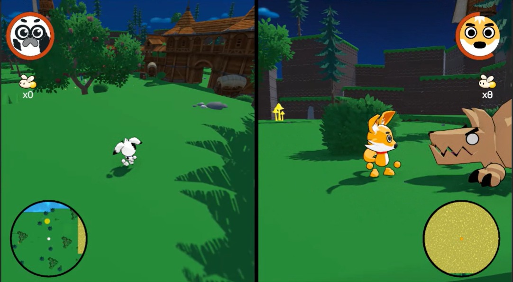

BITÁCORA DE DESARROLLO
Semana 13
Mejoras en la interfaz y nuevos sistemas de interacción
Durante esta semana trabajamos en mejorar la experiencia del jugador, incorporando nuevos sistemas de interacción con los personajes del mundo y puliendo algunos elementos visuales de la interfaz.

¿Qué queríamos lograr?
El objetivo de esta semana fue seguir construyendo una experiencia de juego más completa, no solo desde las mecánicas principales, sino también desde la interacción con el mundo y sus personajes.
Para esto, nos enfocamos en mejorar la selección de personajes, agregar diálogos con NPC y desarrollar un sistema de intercambio que permita comprar habilidades utilizando Lumens.
Mejoras en la selección de personajes
Comenzamos realizando ajustes en la pestaña de selección de personajes. Mejoramos principalmente el fondo y algunos detalles visuales para que la interfaz tuviera una apariencia más estética y agradable.
Con estos cambios buscamos que la elección entre los personajes se sienta más integrada con la identidad visual del videojuego.
Sistema de diálogo con NPC
Incorporamos un sistema de diálogo que permite al jugador hablar con los personajes no jugables del mundo.
Ahora, al acercarse a un NPC e interactuar con él, se activa una conversación. Esto permite darle más vida al entorno y abrir la posibilidad de transmitir información al jugador a través de los personajes.
Sistema de tienda e intercambio
Siguiendo con las interacciones con los NPC, desarrollamos un sistema de tienda o intercambio en el que los personajes pueden utilizar Lumens para comprar habilidades.
De esta manera, los Lumens no solo forman parte del juego como recurso, sino que también adquieren una utilidad dentro de la progresión del jugador.
Mejoras en el minimapa
También realizamos ajustes visuales al minimapa de cada personaje. Aunque este elemento ya estaba implementado, decidimos pulir su apariencia para integrarlo mejor con la interfaz del juego.
El minimapa ayuda al jugador a orientarse y ubicarse dentro del escenario mientras avanza por el nivel.

Resultado de la semana
Esta semana logramos ampliar las posibilidades de interacción dentro de Paw Team. La selección de personajes tiene una presentación más pulida y ahora contamos con diálogos, una tienda de habilidades y mejoras en el minimapa.
¿Qué observamos o descubrimos?
Estos sistemas ayudan a que el mundo se sienta más completo y ofrecen nuevas formas de relacionarse con los personajes y los elementos del entorno.
También vimos que los Lumens pueden tener un papel más importante en la experiencia al permitir adquirir habilidades y aportar a la progresión del jugador.
¿Qué cambiaremos en la siguiente versión?
- Desarrollar una cinemática de introducción que le dé contexto al jugador sobre la historia y el mundo del videojuego.
- Continuar puliendo el mapa y sus elementos visuales.
- Mejorar el flujo del nivel para que la experiencia de juego sea más clara y tenga una mejor continuidad.